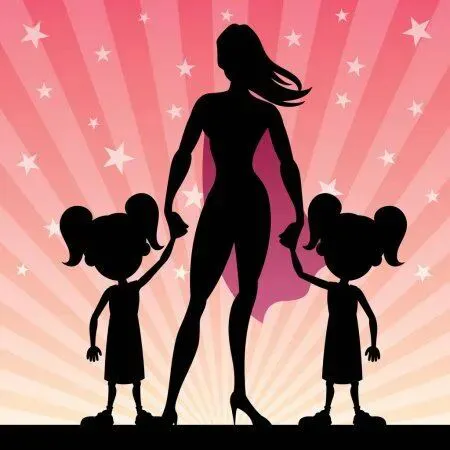
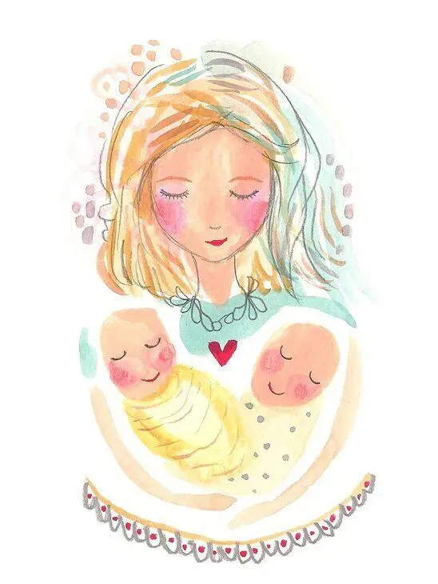
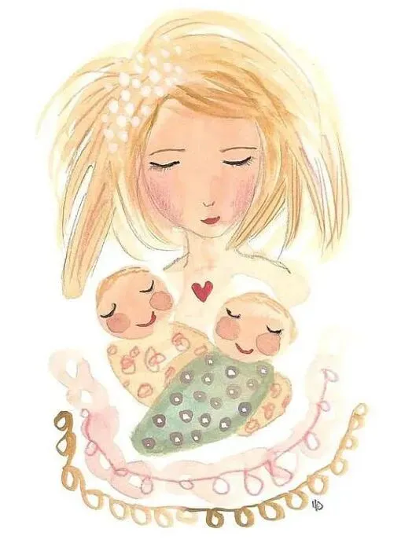
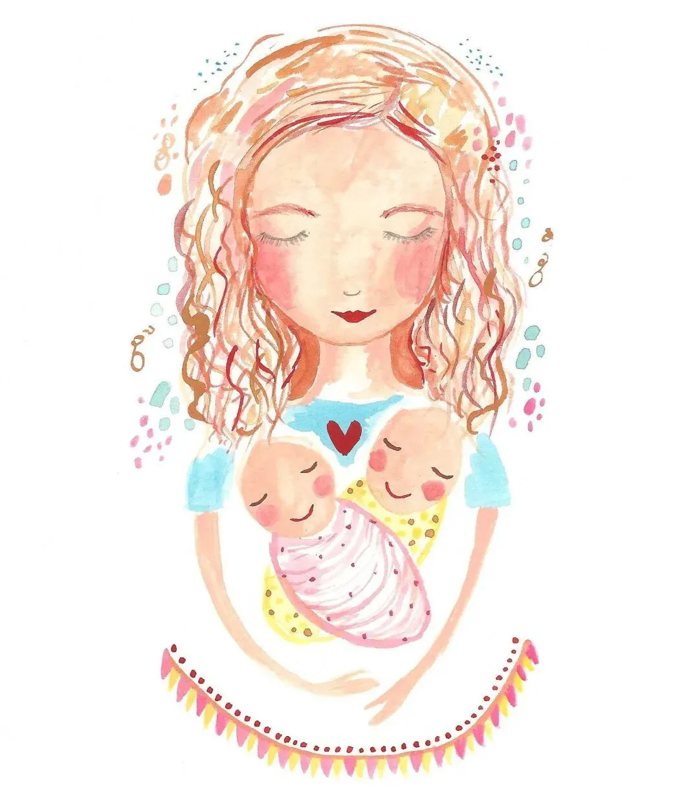
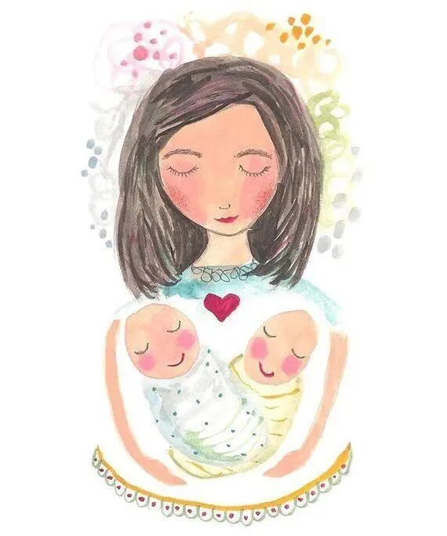
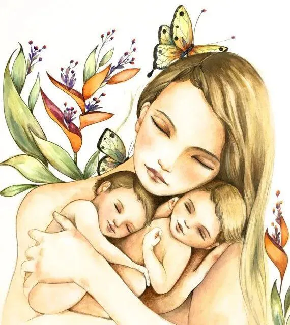
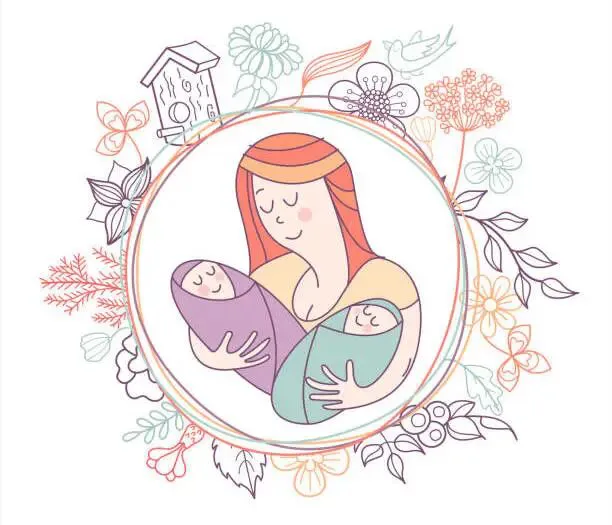

孖仔帮
公众号ID：twinsbang
关注
文|圆圈妈
网图|侵删
前几日看到一篇文章《小学生是怎么把磨蹭做到全国统一的？太真实了，哈哈哈哈》很有意思。
我家的双胞胎今年秋季也要上小学了，看到这样的画面，除了笑岔气就是瑟瑟发抖，一想到我要同时辅导两个这样全国统一磨蹭的小学生...
阴功咯！有点大限将至的感觉。
其实呢，小学生的全国统一，只是把磨蹭发挥到极点，其他方面还是个性化的，要说能多层次、全方位、宽领域、多形式、广角度、多渠道……做到全国统一的，唯有我们这群双胞胎老母亲。
因为都是同样的幸运（遭遇），同样的上辈子炸掉了银河系，这辈子来双倍奉还。
那么，全国各地的双胞胎妈妈都统一成啥样了呢？
趁着母亲节，今日的推文汇总出10个双胞胎老母亲的专属标签，都是我从双胞胎社群的聊天记录中浓缩出来的精华哦，如有补充，欢迎留言区补上哈！
母亲节快乐
01
总觉得别人家的双胞胎长得很像，
但看自己家的就不像，
总是怀疑生了对假双胞胎，
看一眼就能分辨出来，
但神奇的是，
只有你能看出区别，
别人都傻傻分不清，
那种火眼金星到什么程度呢？
娃放个屁都能知道，
这肯定是大宝的专享臭屁，
像那两只爆笑的虫子，
浮夸又猥琐....
母亲节快乐
02
给双胞胎买日常用品，
很像搞批发的专业户，喜欢大批量购入，
网购时，1688是首选，
双胞胎嘛，消耗大。
这个袜子的白色黄色各来一打，
那个口水巾款式来两打，
这个品牌的面条娃喜欢吃，拿两箱，
还有那啥尿不湿，L码来5箱，XL码来2箱...
什么？没地方放？
塞在床底下啊！
母亲节快乐
03
还是给双胞胎买东西...
哎呀，特别纠结!
大多数情况下，默认一式两份，
遇到价格贵的，又会犹豫下，
要不买一份也可以，
但又很担心两人一起抢，
最后还是咬牙买两份；
纠结完数量，还要纠结颜色:
两个颜色不一样没那么单调，
但是不一样颜色，
会不会都觉得对方的颜色好看些？
颜色还没确定好，
又觉得两个不一样款式会不会更好玩...
总之，花钱一瞬间，
纠结期会持续三天三夜，
甚至更久...
母亲节快乐
04
有余光强迫症，
带双胞胎出门，这眼睛的老毛病又犯了，
总是忍不住用眼角余光看旁人的反应，
然后根据不同反应开始内心的小嘀咕...
哇塞，双胞胎啊，好可爱哦，太幸福了
----呵呵，谁生谁知道！
妈呀，两个都是儿子，压力好大啊
------没办法，婆婆命，天注定！
哎呀是双胞胎啊，怎么现在那么多人去做啊？
-----KAO，你有本事自己做去！
但不管怎样，
有句心里话不吐不快
养双胞胎这么累，适当”作“一下，很治愈！
母亲节快乐
05
与单胎妈妈没有共同话题，
总觉得跟她们聊在一起，
会觉得自己不正常，两个孩子不正常，
我们全家都不正常。
聊聊产后修复，泵奶技巧，辅食料理...
倒还融洽，
要是说到喂奶，哄睡，带娃...
马上！
友谊的小船说翻就翻，
塑料的友情说撕就撕，
从此路人丙一枚。
母亲节快乐
06
特别容易魔怔，因为有对比，
尤其是双胞胎发育不一致时，更明显。
总是怀疑发育慢的那个娃有问题
说好的不拿俩娃比较，
结果天天神经兮兮，
端着两个娃的小脸左看右看，
稍有不对劲就YY很多不好的预感，
自己吓自己。
遇到同龄的小朋友，会抓住人家妈妈问，
你们家一天吃多少奶？
现有多高多重？辅食吃什么？长牙了吗？
啥时候学会走的？
会说话了吗？
母亲节快乐
07
内心特别很柔软，泪点低，
看到哪家小孩不小心磕伤，生病或走丢...
立马哭得比人家亲妈还惨，
必须马上要见到自己的俩娃，
确认下是否安全，
然后赶紧熊抱一下。
因为，一口气养两个娃，
知道养娃太特么不容易了，
对孩子们付出了太多，
所以特别在乎，特别爱他们。
因为，对孩子们的爱，
不是因为他们可爱，
不是他们是亲生的，
而是...
对他们的付出，
因为，对于妈妈而言，
最大的心愿莫过于，
孩子平安健康，快乐成长！
母亲节快乐
08
当两个娃同时哭同时索抱时，
不问亲生，全看心情，
心情好，
能一口气抱起两个娃走过两条街，
不累不喘不腰疼，
还超享受这种左拥右抱的感觉，
简直不能太幸福；
心情不好，
两个都不想抱，
觉得烦，特讨厌，想扔掉...
晚上看着两张小脸，心里软的一塌糊涂，
可是...
白天俩娃不睡，自己困得发懵的时候，
觉得晚上的浓情蜜意，
简直是脑子里进了水，
湿透了。
peace&love？
哼，不存在的！
大概是一半海水，一半火焰吧。
母亲节快乐
09
对其他双胞胎家庭,
有一种惺惺相惜之情，
很容易产生纯天然，超本能的革命友谊，
每当带着双胞胎出门，
迎面走来另外一对双胞胎，
双方家长都会不约而同对视下，
然后微笑下，或者点头示意…
就好像那啥..?
经典电影周星驰和对穿肠那一段经典桥段…
只差没有扑过去抱头痛哭一番
“哥们/姐们，辛苦了！”
我见诸君皆苦逼，料诸君见我亦如是。
大概，说的是这个意思。
母亲节快乐
10
特别有能耐，
包括但不限于...
耐打，耐抗，耐摔，耐压，耐用，
没当妈之前，十指不沾阳春水，
当妈之后，化身漫威女英雄里的黑寡妇，
通马桶换灯泡，上瓦房揭瓦片....
24小时连轴转，
只差没有三头六臂，飞檐走壁。
一晚上通宵喂奶搞俩娃，
白天也能蹬着高跟鞋上班去。
因为经历过养育双胞胎的大风大浪，
生活中很多小事情都能淡而处之，
什么职场瓶颈，婆媳矛盾，夫妻矛盾...
更是不在话下，
比起养育双胞胎的那些破事屁事，
那都不是事！
双胞胎妈妈们，母亲节快乐
还有其他...
怀着双胞胎时，感觉...有点非人哉，
肚子特别大
走路特别沉
身体特别重
眼睛特别困
尿尿特别量！大！
口水特别多
孕吐特别惨！烈！
口味特别诡！异
皮肤特别好/差
睡觉特别悲！剧！
心情特别糟
胃口特别怪
春梦特别美
双胞胎出生后，感觉...有点看破红尘，
最想回避的话题是，
二胎生不生，三胎要不要，四胎敢不敢？
最讨厌别人问，
你家双胞胎是做的还是遗传的？
最崩溃的时候，
俩娃一起哭；
最绝望的时候，
俩娃一起生病；
还有最绝望的是，
一个娃退烧了，还没歇口气，另一个娃发烧了；
比这更绝望的是，
俩娃好了，我病了。
最无奈的时候，
俩娃一起哭啊求抱抱啊；
最心累的时候，
俩娃才刚消停又打起来了；
最无语的时候，
俩娃的睡眠作息从来不同步；
最心酸的时候，
俩娃没人帮忙带；
最愧疚的时候，
一个母乳，一个配方奶；能力有限，只能带一个睡；
...
当然，也有很多未经证实的能力得到了提升，
比如...
因为经常要两手抱俩娃，
手劲大，臂力强，
因为只有拼凑式时间，
拉便便可以分批进行，
至于何时收何时放，跟神经系统没关系，
全看俩娃给不给面子。
还有哪些？欢迎留言区补充！
最后，送分题：
双胞胎妈妈是如何做到全国统一的？
答案是，这不是做到的，
而是...出厂自带的！
-END-
今日互动话题
#双胞胎妈妈还有哪些专属特点？#
评论区聊一聊呗！
微信公众号：孖仔帮
ID : twinsbang
专注双胞胎孕育，养育，教育经验分享
扫码关注我们
点一下你会更好看耶







